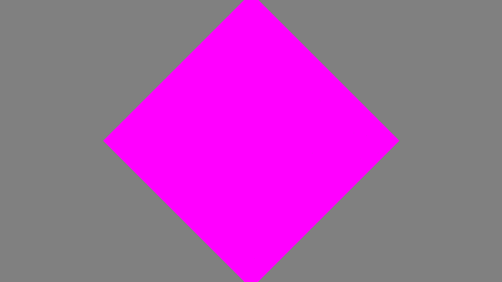

Layering
Fable.jl has multiple layer types that can be composed together to create a final image (or frame in a video). These layers indicate how the user would like to create an object or field. Right now, the following layers are available:
ColorLayer: This layer is essentially a single color spread across some number of pixels in a rectangle.ShaderLayer: This layer is a "shader" that uses aFractalUserMethodto color every pixel in a rectangle.ImageLayer: This layer is used to import images generated outside of Fable.jl. Note that remedial resizing functions are available, but these need to be cleaned up in the future.FractalLayer: This layer is for using Iterated Function Systems and generating objects via fractals.
These layers eventually write to their respective canvas objects, which are composed into a final image or frame via:
write_image(layer; filename = "check.png")
write_image([layers]; filename = "check.png")
write_video!(video_out, layers)
write_video!(video_out, [layers])As an important note, even though the canvas for each layer is essentially an Array (or CuArray / ROCArray) of RGBA values (pixels), the layers, themselves are created with the following arguments:
world_size: The "world size" is the size of the world the layer covers. For example, if you want to render a unit circle, you might want to make sure the world size is roughly $2\times 2$ in size, otherwise, you might clip part of the object!ppu: the PPU unit stands for "pixels per unit" and is similar to DPI (Dots Per Inch) used in printing. The idea here is that each unit of your world must have a certain number of pixels in it. Importantly, this allows you to dynamically scale your visualization without changing object position.position: This is the position (in the physical units of your world) of the center of your layer. This helps with compositing layers at different locations.
To get a better understanding of how these work, here are some quick examples:
Color Layers
The ColorLayer is likely the simplest layer provided by Fable.jl. To generate a layer that is only a single color, you just need to create the layer and then run the write_image(...) function, like so:
function layering_example(; ArrayType = Array)
world_size = (9*0.15, 16*0.15)
ppu = 1920/world_size[2]
clayer = ColorLayer(RGB(0.5, 0.5, 0.5); world_size = world_size, ppu = ppu,
ArrayType = ArrayType)
write_image(clayer; filename = "out.png")
end
Running this, will provide the following image:
Shader Layers
Shader Layers are a bit more complicated than Color Layers, but are ultimately user-specified functions spread across an image. So, let's say the user specified the following FractalUserMethod:
radial = @fum function radial(y, x; origin = (0,0))
r = sqrt((x-origin[2])*(x-origin[2]) + (y-origin[1])*(y-origin[1]))
red = 1
green = min(1, 1/r)
blue = 1
alpha = min(1, 1/r)
return RGBA{Float32}(red, green, blue, alpha)
endThis should essentially create a white circle that fades out and also turns pink as it goes further from the center of the image. To run this, you can generate a ShaderLayer like so:
function shader_example(fum; res = (1080,1920), ArrayType = Array,
filename = "out.png")
layer = ShaderLayer(fum; ArrayType = ArrayType, world_size = (9/4, 4),
ppu = 1920/4)
run!(layer)
write_image(layer; filename = filename)
end
shader_example(radial)Which will create the following image (with a black background):
Image Layers
As mentioned above, image layers are a work-in-progress. In particular, resizing is a bit finicky and need a little rework. For now, it works like so:
ilayer = ImageLayer(img)
ilayer = ImageLayer(filename)
write_image(ilayer, filename_2)It can also take all the same arguments as other layers (position, ppu, and world_size), but the resizing is done in a very naive way, so if the image looks odd through Fable.jl, it might be best to figure out the exact pixel size you need and to make the image fit those dimensions with another program.
Fractal Layers and combing layers together
Because Fractal Layers are a bit tricky, there are additional examples in the documentation to describe how they work. For now, I will show an example of how you might composite two layers together by modifying the example shown for the Color Layer above:
function layering_example(num_particles, num_iterations; ArrayType = Array)
world_size = (9*0.15, 16*0.15)
ppu = 1920/world_size[2]
square = define_rectangle(position = [0.0,0.0],
rotation = pi/4,
color = RGBA(1,0,1))
flayer = FractalLayer(; ArrayType = ArrayType, H1 = square,
world_size = world_size, ppu = ppu,
num_particles = num_particles,
num_iterations = num_iterations)
clayer = ColorLayer(RGB(0.5, 0.5, 0.5); world_size = world_size, ppu = ppu,
ArrayType = ArrayType)
layers = [clayer, flayer]
run!(layers)
write_image(layers; filename = "out.png")
endThis will provide the following image:

Note that the clayer (Color Layer) is written before the flayer (Fractal Layer). In general, the first layer acts as the base layer for rendering and acts as your "camera" for viewing all other layers. This might need a better abstraction in the future, but works for now.